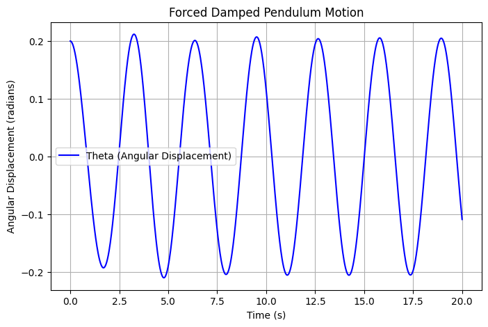

Problem 2
Investigating the Dynamics of a Forced Damped Pendulum
Introduction
The forced damped pendulum is a fundamental system in physics and engineering that demonstrates a transition from simple harmonic motion to resonance and chaos due to the interplay of damping, restoring forces, and external periodic forcing. This study helps us understand complex real-world applications, including energy harvesting, vibration isolation, and mechanical resonance.
1. Theoretical Foundation
Governing Equation
The motion of a forced damped pendulum is described by the following differential equation:
where:
-
\(θ\) → Angular displacement (radians)
-
\(b\) → Damping coefficient (controls energy loss)
-
\(g\) → Gravitational acceleration
-
\(L\) → Length of the pendulum
-
\(A\) → Amplitude of the external driving force
-
\(Ω\) → Frequency of the external force
Small-Angle Approximation
For small oscillations, we approximate \(\sin\theta \approx \theta\), simplifying the equation to:
This is a linear equation, and its solution describes harmonic oscillations.
Resonance Conditions
-
When the driving frequency \(Ω\) matches the system's natural frequency: $$ \omega_0 = \sqrt{\frac{g}{L}} $$ resonance occurs, leading to maximum oscillations.
-
At high amplitudes, the system can enter chaotic motion.
2. Analysis of Dynamics
Key Parameters Affecting Motion
-
Damping coefficient \(b\): Higher damping reduces oscillations and suppresses chaos.
-
Driving force amplitude \(A\): Large values introduce nonlinear behavior and chaos.
-
Driving frequency \(Ω\): Affects resonance and synchronization.
Regular vs. Chaotic Motion
-
Low damping & weak forcing → Periodic oscillations (predictable motion).
-
Moderate forcing → Resonance (large oscillations at specific frequencies).
-
High forcing & nonlinearity → Chaos (unpredictable motion with extreme sensitivity to initial conditions).
3. Real-World Applications
Common Uses of Forced Damped Pendulums
-
Suspension Bridges → Studying oscillations in structures.
-
Energy Harvesting → Using vibrations to generate electricity.
-
Oscillating Circuits → Analogous to driven RLC circuits.
Real-World Example: A Playground Swing
A swing acts as a forced damped pendulum:
-
The child’s motion adds an external periodic force.
-
If pushing is in sync with the swing’s natural frequency → Resonance occurs (higher amplitude).
-
If air resistance & friction increase → Damping reduces motion.
-
Random pushing at different times can lead to chaotic motion.
4. Computational Implementation
We develop a Python simulation to:
-
Numerically solve the differential equation.
-
Visualize pendulum motion for different damping and forcing.
-
Generate phase diagrams and Poincaré sections to illustrate chaotic transitions.
Python Script
import numpy as np
import matplotlib.pyplot as plt
from scipy.integrate import solve_ivp
# Define the forced damped pendulum equation
def forced_damped_pendulum(t, y, b, g, L, A, omega):
theta, omega_dot = y
dtheta_dt = omega_dot
domega_dt = -b * omega_dot - (g / L) * np.sin(theta) + A * np.cos(omega * t)
return [dtheta_dt, domega_dt]
# Parameters
b = 0.5 # Damping coefficient
g = 9.81 # Gravity (m/s^2)
L = 1.0 # Length of the pendulum (m)
A = 1.2 # Driving force amplitude
omega_drive = 2.0 # Driving frequency
# Initial conditions
theta_0 = 0.2 # Initial angle (radians)
omega_0 = 0.0 # Initial angular velocity
# Time span
t_span = (0, 20) # Simulate for 20 seconds
t_eval = np.linspace(*t_span, 1000)
# Solve the equation
sol = solve_ivp(forced_damped_pendulum, t_span, [theta_0, omega_0], t_eval=t_eval, args=(b, g, L, A, omega_drive))
# Plot results
plt.figure(figsize=(8, 5))
plt.plot(sol.t, sol.y[0], label='Theta (Angular Displacement)', color='b')
plt.xlabel('Time (s)')
plt.ylabel('Angular Displacement (radians)')
plt.title('Forced Damped Pendulum Motion')
plt.legend()
plt.grid()
plt.show()

This graph shows how the angular displacement of the pendulum changes over time under damping and periodic forcing.
Expected Additional Plots:
-
Phase portraits to visualize stability and chaos.
-
Bifurcation diagrams to show changes in periodicity.
Conclusion
The forced damped pendulum is a rich model for exploring chaotic dynamics, resonance, and real-world oscillations. By analyzing its behavior, we gain insights into engineering, physics, and even biological rhythms.